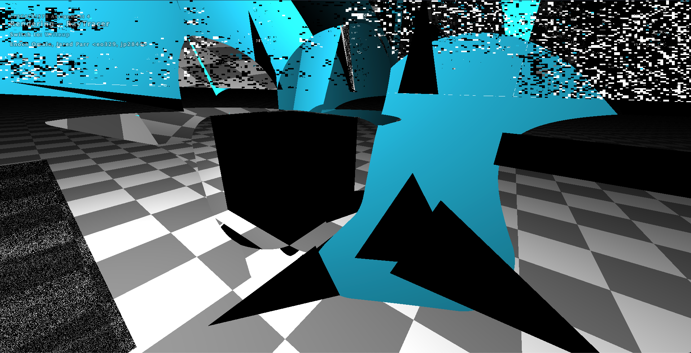
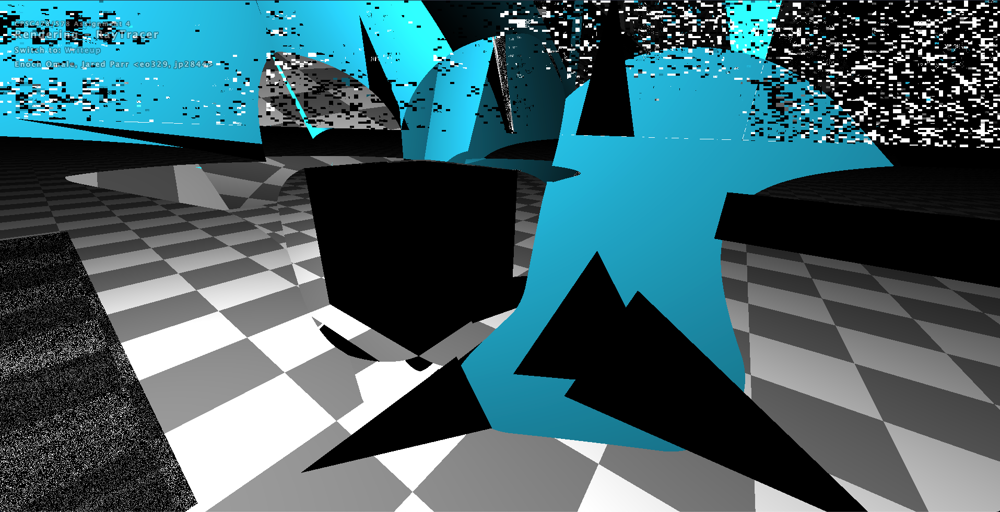

CPSC478/578 Assignment 4 — Ray Tracer — Writeup
Switch to: Interactive Editor
Collaboration Statement:
Under penalty of academic dishonesty (as outlined in RRR)
my digital signature below verifies that the following is true:
That all images in this writeup were generated directly by my solution code
or provided by the course staff (exception: art contest submissions
may pass through intermediary software like GIMP)
That no other student has viewed my writeup explanations
or my writeup images
That my solution code is my own work; particularly that
my solution was not copied from any other
student's solution code, and that no other student
copied their solution directly code from me
That I did not discuss assignment specifics or view
the solution code of any other student besides that of my (optional) partner
That I have followed all other course collaboration
and course plagiarism policies as written on the course website.
Enoch Omale e0329, Jarred Parr jp2844
- (1.0) Trace Ray and Calculate Color
- (2.0) Triangle
- (2.0) Sphere
- (2.5) Box
- (2.0) Cylinder
- (3.0) Cone
- (1.0) Shadows
- (3.0) Soft shadows
- (2.0) Transmission
- (1.0) Checkerboard
- (1.5) Phong material
- (1.5) Special material
- (1.0) Custom Scene
- (2.0) Animation
- (0-5) Technical Extensions
- (1.0) Art Contest
TraceRay
For the first part of the assignment, I followed the provided
instructions to complete the traceRay and calculateColor
functions.
Triangle
We first use the intersect plane method to compute a collision with a plane that lies parallel to the triangle we're testing.
To do so, you need to calculate the normal of the triangle, which you can do by computing hte cross product of two of its edges
(to get the normal) and then working out how far away from the origin it lies. If the plane intersection test passes, We work out the
barycentric coordinates of the intersection point and make sure it's inside the triangle.
Sphere
To solve the sphere intersection we utilized the quadratic formula to compute the location a ray
intersected with the collision object. We accomplished this by constructing each of the variables for
the quadratic and solving for the positive determinant case. This gave us two options to pick from since the quadratic
formula can give multiple solutions. We always chose the closest option (ignoring a negative value for our parameter). The normal is parallel
to the intersection point - the center of the sphere.
Box
For this we partitioned the space of hittable regions into each of the planes that make up the box and
computed intersections for each of the options, returning the closest of any positive hits.
Cylinder
The same approach as with the sphere, we craft a similar quadratic equation and solve for the two values for the tube part of the cylinder.
We then make sure that the ray doesn't go too high or too low. The normal is given by P - Pc where P is the intercet point and
Pc is the closest point to the center of the tube's axis. Then we do another test for the disks (plain and then, inside-circle test) and pick the nearest of the intersections.
Cone
Usual quadratic approach for the main cone, but the cutoff is slightly different to the cyllinder since the equation solves for a double infinite cone.
The normal is calculated by working out a projection of the center of the base onto the side. We also reuse the disk intersection for the base.
Finally we return the closest positive result.
Shadows
Hard shadows involved comparing the ray-light vector to the interaction vector. Since we shoot a ray
from the light to the object, we check first for any collision in the scene. Then, from there, we get an
additional check to determine if the scene intersection and the position that should be in the shadow
hit the same thing. If they did, we know that the object is not in a shadow. However, if the difference
between the two values is greater than zero (or eps in this case), we knew that they probably hit at
different locations and, thus, there was likely a shadow.
Soft shadows
Not implemented. (next time!)
Transmission
Since refractive behavior is a function of the indicent vector and the refraction direction, we just
needed to re-form snells law in a way that allowed us to relate the angles between these two quantities.
The easiest way to compute the relations between the vectors was by using dot products. In this case, we
just compared the source normal to the indicent vector and with the eta term we could apply snells law
directly.
Checkerboard
To make the checkerboard pattern we needed to mimic the sinusoid periodicity that a checkerboard has. To
do this, we scaled the intersection position into a flat range, and removed the intermediate states like
you might find in a sine, and transformed the whole thing into basically a step function by using the
floor operation. We added a real-valued scaling term which can adjust the size of the checkerboard tiles
as well. To determine which color a tile got, we just checked if the value was even or odd, and this
seemed to work well. To make sure it matched the sample photos, we just scaled the color instead of
setting it black and white.
Phong material
Inside of a phong material our component was calculating the specular term for the surface of the
object. We computed the direction of specular reflection by just using the built-in glsl function. This
gave us the normalized reflection direction that the light would bounce back. Since specularity shows up
as bright highlights, we needed to then get the specular term, which is just a scaled dot product of the
view and reflection directions, raised to the power of the material shininess. This gives a large
scaling to whatever light is provided, ensuring that it shows highlights correctly on the surface of the
material.
Special material
Not implemented.
Custom Scene
Not implementated.
Animation
Not implementated.
Technical Extensions
N/A
Art Contest
Remember to appropriately label your submission! If you are submitting a google
drive link to a movie or animation, give the tag an id that matches the format we
for your labeled art project images.
"The Woeful Graduate Student"
"Oh my god, why do the triangles not show up correctly"
-Enoch and I for a couple of hours.

Switch to: Interactive Editor
That all images in this writeup were generated directly by my solution code or provided by the course staff (exception: art contest submissions may pass through intermediary software like GIMP)
That no other student has viewed my writeup explanations or my writeup images
That my solution code is my own work; particularly that my solution was not copied from any other student's solution code, and that no other student copied their solution directly code from me
That I did not discuss assignment specifics or view the solution code of any other student besides that of my (optional) partner
That I have followed all other course collaboration and course plagiarism policies as written on the course website.
Enoch Omale e0329, Jarred Parr jp2844
- (1.0) Trace Ray and Calculate Color
- (2.0) Triangle
- (2.0) Sphere
- (2.5) Box
- (2.0) Cylinder
- (3.0) Cone
- (1.0) Shadows
- (3.0) Soft shadows
- (2.0) Transmission
- (1.0) Checkerboard
- (1.5) Phong material
- (1.5) Special material
- (1.0) Custom Scene
- (2.0) Animation
- (0-5) Technical Extensions
- (1.0) Art Contest
TraceRay
For the first part of the assignment, I followed the provided
instructions to complete the traceRay and calculateColor
functions.
Triangle
We first use the intersect plane method to compute a collision with a plane that lies parallel to the triangle we're testing. To do so, you need to calculate the normal of the triangle, which you can do by computing hte cross product of two of its edges (to get the normal) and then working out how far away from the origin it lies. If the plane intersection test passes, We work out the barycentric coordinates of the intersection point and make sure it's inside the triangle.
Sphere
To solve the sphere intersection we utilized the quadratic formula to compute the location a ray intersected with the collision object. We accomplished this by constructing each of the variables for the quadratic and solving for the positive determinant case. This gave us two options to pick from since the quadratic formula can give multiple solutions. We always chose the closest option (ignoring a negative value for our parameter). The normal is parallel to the intersection point - the center of the sphere.
Box
For this we partitioned the space of hittable regions into each of the planes that make up the box and computed intersections for each of the options, returning the closest of any positive hits.
Cylinder
The same approach as with the sphere, we craft a similar quadratic equation and solve for the two values for the tube part of the cylinder. We then make sure that the ray doesn't go too high or too low. The normal is given by P - Pc where P is the intercet point and Pc is the closest point to the center of the tube's axis. Then we do another test for the disks (plain and then, inside-circle test) and pick the nearest of the intersections.
Cone
Usual quadratic approach for the main cone, but the cutoff is slightly different to the cyllinder since the equation solves for a double infinite cone. The normal is calculated by working out a projection of the center of the base onto the side. We also reuse the disk intersection for the base. Finally we return the closest positive result.
Shadows
Hard shadows involved comparing the ray-light vector to the interaction vector. Since we shoot a ray from the light to the object, we check first for any collision in the scene. Then, from there, we get an additional check to determine if the scene intersection and the position that should be in the shadow hit the same thing. If they did, we know that the object is not in a shadow. However, if the difference between the two values is greater than zero (or eps in this case), we knew that they probably hit at different locations and, thus, there was likely a shadow.
Soft shadows
Not implemented. (next time!)
Transmission
Since refractive behavior is a function of the indicent vector and the refraction direction, we just needed to re-form snells law in a way that allowed us to relate the angles between these two quantities. The easiest way to compute the relations between the vectors was by using dot products. In this case, we just compared the source normal to the indicent vector and with the eta term we could apply snells law directly.
Checkerboard
To make the checkerboard pattern we needed to mimic the sinusoid periodicity that a checkerboard has. To do this, we scaled the intersection position into a flat range, and removed the intermediate states like you might find in a sine, and transformed the whole thing into basically a step function by using the floor operation. We added a real-valued scaling term which can adjust the size of the checkerboard tiles as well. To determine which color a tile got, we just checked if the value was even or odd, and this seemed to work well. To make sure it matched the sample photos, we just scaled the color instead of setting it black and white.
Phong material
Inside of a phong material our component was calculating the specular term for the surface of the object. We computed the direction of specular reflection by just using the built-in glsl function. This gave us the normalized reflection direction that the light would bounce back. Since specularity shows up as bright highlights, we needed to then get the specular term, which is just a scaled dot product of the view and reflection directions, raised to the power of the material shininess. This gives a large scaling to whatever light is provided, ensuring that it shows highlights correctly on the surface of the material.
Special material
Not implemented.
Custom Scene
Not implementated.
Animation
Not implementated.
Technical Extensions
N/A
Art Contest
Remember to appropriately label your submission! If you are submitting a google drive link to a movie or animation, give the tag an id that matches the format we for your labeled art project images.
"The Woeful Graduate Student"
"Oh my god, why do the triangles not show up correctly"
-Enoch and I for a couple of hours.